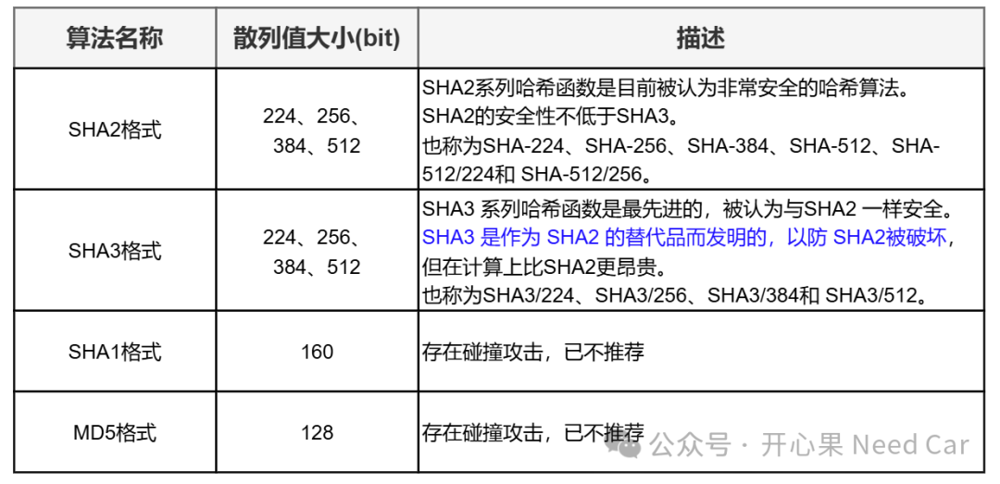

在信息安全的概念里，经常会听到HMAC（Hash-based Message Authentication Code，哈希运算消息认证码）的概念。那么，- 本人开发的HSM驱动，HMAC-SHA256性能又如何呢？
- 开发过程中，又是如何验证HMAC-SHA256功能的可靠性？测试脚本如何编写？
本文，主要针对HMAC以及HMAC-SHA256原理的如上问题展开讨论。其实，HMAC是基于Hash函数和密钥进行消息认证的一种方法。Hash函数其实就是单向散列函数，即：可以将任意输入长度的消息输出固定长度的一种函数，输出的固定长度称为散列值（也称消息摘要）。HMAC使用的Hash函数，其实并不是固定的一种函数，Hash函数有多种算法，如下所示，参考(1)。
